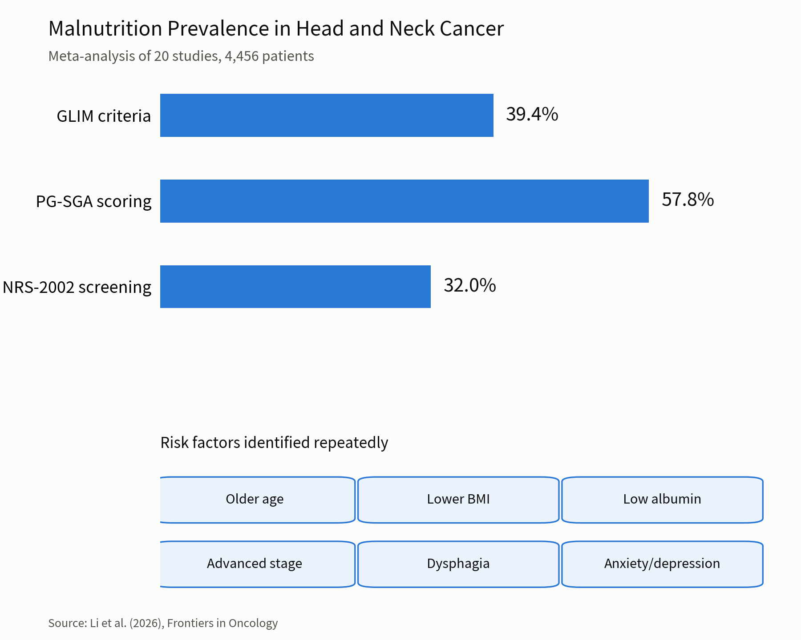
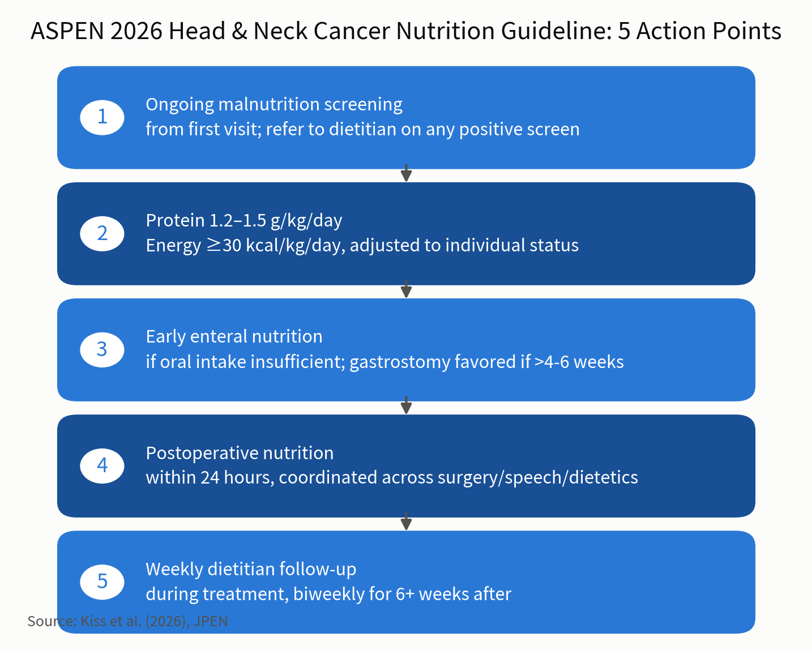

Nutrition is not cleanup work for after treatment
ASPEN's March 2026 guideline, the first written specifically for head and neck cancer: 1.2 to 1.5 g/kg/day of protein, at least 30 kcal/kg/day, and malnutrition screening from the first visit onward.
These are the patients most likely to be quietly starved: the tumour sits where eating happens, surgery removes tissue, radiation burns mucosa and dries the mouth, chemotherapy adds nausea. In a 2026 meta-analysis, 39.4% met GLIM malnutrition criteria and 57.8% were flagged by PG-SGA.
1. Background: Head and neck cancer patients aren't just thin. They're starving in slow motion
On an oncology ward, head and neck cancer patients are the group most likely to be quietly malnourished before anyone notices. The tumor sits in the mouth, throat, or nasopharynx, exactly where eating happens. Surgery removes tissue needed for chewing and swallowing. Radiation dries out the mouth, burns the mucosa, and dulls taste. Chemotherapy adds nausea and appetite loss on top. For many patients, eating stops being automatic and becomes something they have to fight for, meal by meal.
Clinically, this often shows up as trismus (limited jaw opening), painful mucositis, and saliva so reduced that even water is hard to swallow, never mind solid food. Altered taste makes familiar meals unappetizing. Patients quietly eat less "just for now," and weight drops fast enough that it's sometimes only caught at a follow-up visit, not day to day. That's why malnutrition in head and neck cancer often isn't a slow decline. It's a cliff that appears mid-treatment.
A systematic review and meta-analysis published this year in Frontiers in Oncology, pooling 20 studies and 4,456 head and neck cancer patients, put numbers on how common this really is: 39.4% met malnutrition criteria by GLIM standards, 57.8% were flagged by PG-SGA scoring, and 32.0% were at nutritional risk by NRS-2002 screening[1]. Older age, lower BMI, low serum albumin, more advanced tumor stage, dysphagia, and anxiety or depression were the risk factors that kept showing up[1].
This isn't a cosmetic problem. Patients who lose weight and muscle mass faster have higher treatment-interruption rates, slower wound healing, longer hospital stays, and worse survival. Malnutrition and sarcopenia tend to arrive together in this population: less muscle means more fatigue and falls, and it directly affects how much radiation or chemotherapy dose a patient can actually tolerate. When the body can't keep up, treatment gets delayed or the dose gets cut, and that undercuts the very outcome the treatment was meant to protect. Nutrition care, in other words, isn't a side concern. It's a determinant of whether treatment gets finished at all. Until this March, though, there was no guideline written specifically for this population with concrete numbers clinicians could actually follow.

2. The new report: ASPEN's first head-and-neck-specific nutrition guideline turns gray areas into numbers
In March 2026, the American Society for Parenteral and Enteral Nutrition (ASPEN) published Guidelines for Nutrition in Adults with Head and Neck Cancer in its journal, JPEN. A 21-member interdisciplinary panel, including dietitians, physicians, pharmacists, and speech pathologists, produced what is the field's first systematic nutrition guideline built specifically for this cancer population[2][3].
What the guideline mostly does is take practices that individual hospitals had been improvising and turn them into numbers and timing clinicians can act on directly. Screening needs to start early and repeat often: every patient gets a validated malnutrition screen at first presentation, with ongoing screening through treatment, and any positive screen triggers a full dietitian assessment rather than waiting for visible weight loss. The protein and energy targets are equally specific: 1.2 to 1.5 g/kg/day of protein and at least 30 kcal/kg/day of energy, adjusted for symptom burden and individual status, met through some combination of oral intake, oral nutritional supplements, or enteral feeding[2].
When oral intake can no longer support treatment, the guideline calls for starting enteral nutrition early, with an interdisciplinary discussion over nasogastric versus gastrostomy (PEG/RIG) access; gastrostomy is generally favored when feeding is expected to run longer than four to six weeks[2]. For surgical patients, nutrition should start within 24 hours postoperatively, coordinated across surgery, speech pathology, and dietetics as oral intake is gradually resumed[2]. Follow-up frequency is spelled out too: weekly dietitian visits during active treatment, then every two weeks for at least six weeks after treatment ends, with speech pathology involved before treatment even begins[2].
There's a workforce reality behind all this granular scheduling. Reporting in ASA Generations, the American Society on Aging's publication, notes that U.S. outpatient cancer centers average just one dietitian for every 2,308 patients[4]. A fixed follow-up cadence is partly a way of compensating for that shortage with structure instead of headcount. The guideline is also specific about what not to reach for first: appetite loss should be managed with dietary counseling before medication, pharmacologic appetite stimulants are for short-term use only, and specialty formulas (arginine, glutamine, omega-3 fatty acids, immunonutrition) remain conditional recommendations, not something every patient needs[2].

3. What this means for patients: is it available in Taiwan, and does the NHI pay for it?
Head and neck cancer is not rare in Taiwan. It has long ranked among the most common cancers in men, closely tied to betel nut chewing, smoking, and alcohol use. These patients often already have oral mucosal damage and eating difficulty at diagnosis, so nutritional risk shows up earlier than in many other cancers. Taiwan isn't starting from zero, either: as far back as 2018, a group of Taiwanese radiation oncologists, otolaryngologists, and dietitians published a consensus in Oral Oncology on nutritional intervention for head and neck cancer patients undergoing chemoradiotherapy, built on the same principle of screening and intervening early[5]. The new ASPEN guideline isn't a new concept for Taiwanese teams so much as a sharper, more precise version of an approach they already share, and most head and neck cancer centers should find this straightforward to implement.
In practice, what does a patient actually run into? Tube-feeding hardware, including nasogastric tubes, gastrostomy tubes, and related feeding supplies, falls under NHI's "general materials" coverage, and hospitals aren't permitted to charge patients out of pocket for it. The NHI has also been pushing a "tube-free life" (無管人生) initiative in recent years, offering payment incentives to care teams that successfully help patients come off long-term nasogastric tubes and return to safe oral intake[6], a direction that lines up closely with ASPEN's own emphasis on restoring oral intake as soon as it's safe. Enteral formula provided during a hospital stay is generally bundled into inpatient costs.
Where the gap tends to open up is after discharge. Commercial oral nutritional supplements, high-protein formula drinks for instance, are usually classified as specialty nutrition foods in Taiwan, which typically means out-of-pocket cost rather than routine NHI reimbursement. The actual out-of-pocket burden varies by hospital, product, and how much a patient uses, so it's worth asking the care team or case manager directly; some hospitals also have medical social workers or charitable funds that can help patients facing financial hardship. Dietitian consultations ordered by a physician during a hospital stay are typically included at no extra charge, and many higher-volume head and neck cancer centers have already folded dietitian case management into routine cancer care. Patients shouldn't wait until weight loss is obvious to ask whether that kind of support already exists at their hospital.
A growing number of Taiwanese medical centers have also set up multidisciplinary head and neck cancer clinics, where a patient can see surgery, oncology, radiation oncology, dietetics, and speech pathology in a single visit, which is, in substance, exactly the interdisciplinary coordination ASPEN's guideline calls for. The practical takeaway for a patient is to ask directly whether their hospital runs one of these integrated clinics or has a dedicated head and neck cancer case manager, rather than waiting to be referred.
For patients and families, the guideline's underlying message is straightforward: nutrition isn't cleanup work for after treatment ends. It runs alongside cancer treatment from day one. If swallowing becomes difficult or weight keeps dropping, that isn't a matter of willpower; raising it with the care team early, and discussing whether supplementation or tube feeding is needed, is what keeps treatment on track to actually finish. This guideline doesn't replace clinical judgment: the specific protein target, feeding route, and tube choice for any individual patient still belongs to the treating team.
💡 Three questions worth asking at your next visit: Has my current weight change or albumin level already crossed the threshold for nutrition intervention? If swallowing difficulty lasts more than one to two weeks, should we discuss enteral feeding now rather than waiting until eating stops altogether? Is there a hospital or social-assistance program that helps cover oral nutritional supplements after discharge?
What the guideline is worth is turning how much and when to place a tube from local habit into numbers a team can follow: screen every patient at first presentation and throughout treatment, refer any positive screen to a dietitian, start enteral feeding early once oral intake cannot sustain treatment, favour gastrostomy when feeding is expected to run beyond four to six weeks, and begin nutrition within 24 hours after surgery. Taiwan is not starting from zero — a domestic consensus on nutrition during chemoradiotherapy was published in 2018. The practical gap is cost: feeding tubes and supplies fall under NHI general materials and inpatient formula is generally bundled, while commercial oral nutritional supplements after discharge are usually classified as specialty nutrition foods and paid out of pocket. Ask the care team or case manager about the actual burden; some hospitals have medical social workers or charitable funds. The concrete action is to ask whether your hospital runs an integrated head and neck clinic or has a case manager, rather than waiting until weight loss is obvious.
References
Li Q, Chen Y, Chen C, Ye M. (2026). Prevalence of malnutrition and nutritional risk, and associated factors in adults with head and neck cancer: a systematic review and meta-analysis. Frontiers in Oncology.
Kiss N, Findlay M, Frowen J, et al. (2026). Guidelines for nutrition in adults with head and neck cancer: The American Society for Parenteral and Enteral Nutrition. Journal of Parenteral and Enteral Nutrition, 50(3), 274–338.
American Society for Parenteral and Enteral Nutrition. (2026). New Guideline: Nutrition and Adult Head and Neck Cancer. ASPEN.
ASA Generations. (2026). Keeping Treatment on Track: New Guidelines on Nutrition Support in Head and Neck Cancer. American Society on Aging.
Lin MC, Shueng PW, Chang WK, et al. (2018). Consensus and clinical recommendations for nutritional intervention for head and neck cancer patients undergoing chemoradiotherapy in Taiwan. Oral Oncology, 81, 16–21.
Ministry of Health and Welfare, Taiwan. (2026). Supporting a "Tube-Free Life": NHI Adds Payment Incentives for Removing Long-Term Nasogastric Tubes. Ministry of Health and Welfare.
This is general patient education, compiled from published research and official announcements, and cannot replace a face-to-face consultation. Trial results usually apply to a narrowly defined population; whether they apply to you should be discussed with your own physician. Do not adjust, interrupt or switch treatment on the basis of this article.
← Back to Insights